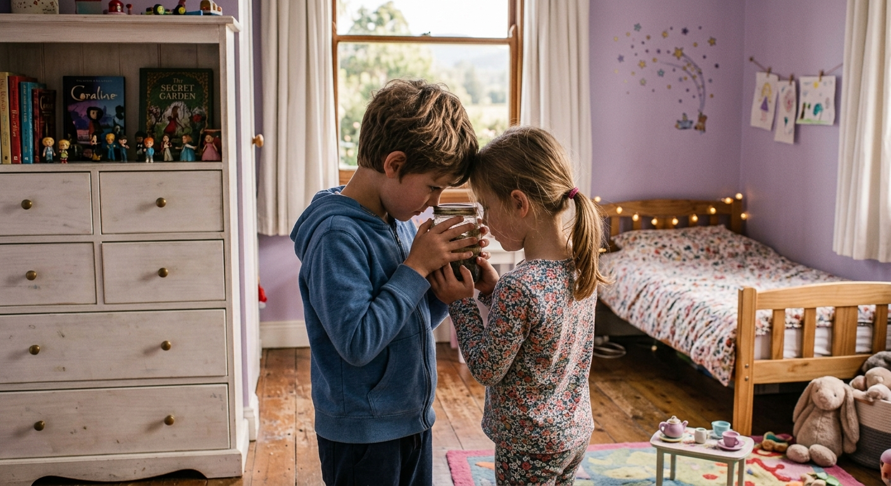

Coleccionista
Publicado en octubre de 2026Por si volaba, no quitábamos los ojos del frasco donde la habíamos introducido. «Está muerta, le has pegado demasiado fuerte», repetía mi hermanita mientras acercaba cada vez más su cara al frasco. Si volaba, se la quedaría ella, la habíamos cazado en su habitación y eran nuestras normas. Si estaba muerta, me la quedaría yo y entraría a formar parte de mi colección. Estaba confundido; yo quería verla levantarse, era una criatura hermosa, con unas bellísimas alas de colores brillantes como nunca había visto. Pero por otro lado me gustaría que estuviese muerta; mi colección de mariposas ganaría mucho si añadiese esta hada.